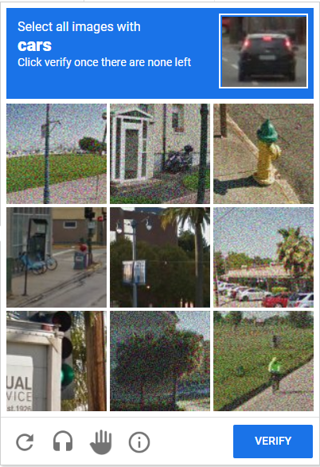
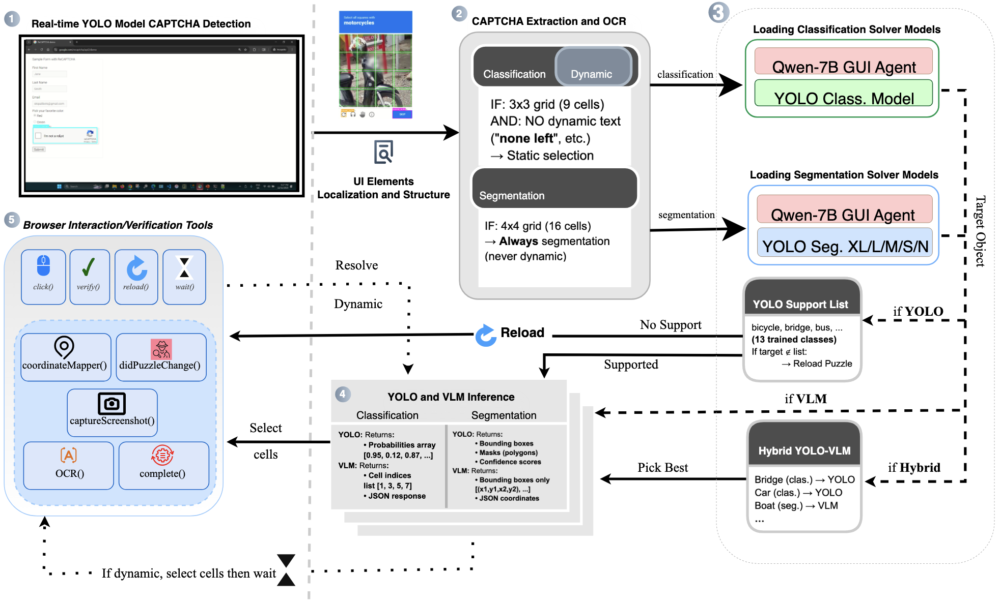
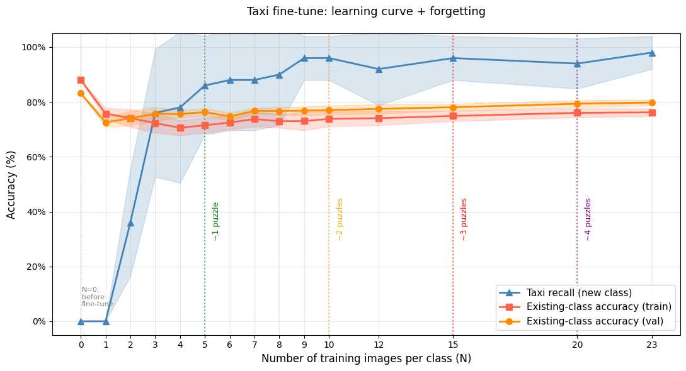
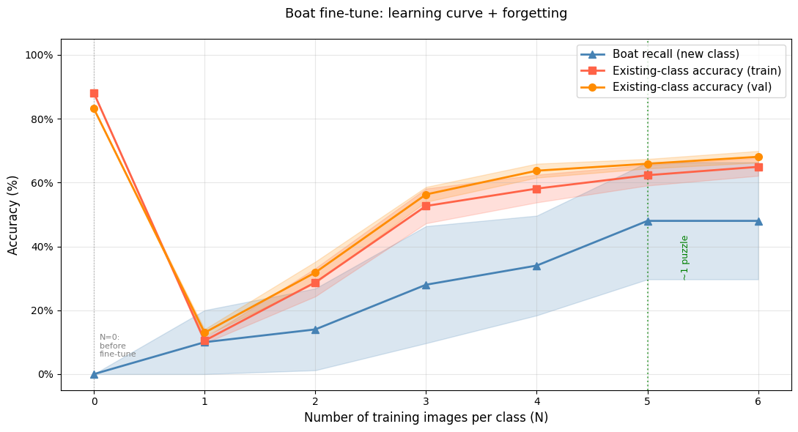
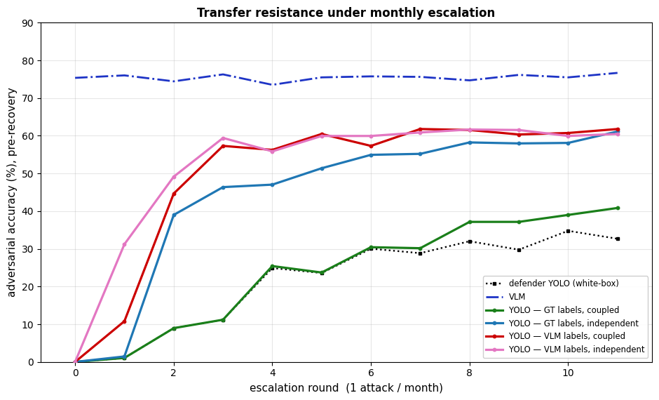

Classification (3x3): Select entire tiles containing target object
Classification (3x3): Select entire tiles containing target object

Segmentation (4x4): Click squares overlapping target object

Dynamic: Iteratively select until none remain
The entire pipeline operates at the OS level: input is obtained by capturing screenshots via system APIs, and output is delivered by sending mouse and keyboard events to absolute screen coordinates via PyAutoGUI. The browser is treated as a visual surface and is never accessed programmatically — no Selenium, no Playwright, no DOM. Our hybrid architecture combines three key components:

Complete system architecture showing end-to-end CAPTCHA solving pipeline. Step 1: Screenshot capture and YOLOv8 UI detection. Step 2: OCR extracts target object and determines puzzle type. Step 3: Confidence-based routing to YOLO or VLM (per image, τ = 0.70). Step 4: Model inference returns predictions. Step 5: FSM maps cells to absolute screen coordinates, sends OS-level events, then verifies, reloads on failure, and handles dynamic refresh.
We evaluate on 15,172 held-out samples spanning 16 object classes. Three of the classes (Boat, Taxi, Tractor) are not supported by the published YOLO classifier. Our hybrid cascade outperforms both YOLO-only and VLM-only solutions.
85.4%
Overall Accuracy
+10.0pp over YOLO-only baseline
84.2%
Macro-Averaged Accuracy
+24.2pp over YOLO-only baseline
| Metric | YOLO | VLM (GUI Agent) | Hybrid |
|---|---|---|---|
| Overall Acc. (16 classes) | 75.48% | 80.52% | 85.44% |
| Overall Acc. (12 classes*) | 83.14% | 78.27% | 84.98% |
| Macro Acc. (16 classes) | 59.99% | 81.01% | 84.17% |
| Macro Acc. (12 classes*) | 75.21% | 76.61% | 81.60% |
| VLM calls | 0% | 100% | 30.0% |
| Avg. latency (per cell) | 4 ms | 225 ms | 71 ms |
| *Excludes four separately collected classes (Boat, Stairs, Taxi, Tractor). | |||

YOLO Classifier
75.5% overall, 60.0% macro accuracy

VLM GUI Agent
80.5% overall, 81.0% macro accuracy
For 4x4 segmentation puzzles, the hybrid combines YOLOv8x-Mask's geometric precision on supported classes with VLM's coverage on rare or unseen categories (Crosswalk, Stairs, Taxi).
| Model | Accuracy | Precision | Recall | F1-Score |
|---|---|---|---|---|
| YOLOv8x-Mask | 86.7% | 87.2% | 76.3% | 0.814 |
| VLM (BBox) | 81.6% | 73.9% | 80.1% | 0.769 |
| Hybrid | 88.6% | 85.6% | 84.3% | 0.850 |
The teacher-student paradigm requires that the VLM clearly outperform a fine-tuned YOLO baseline. That holds for classification (VLM macro recall 81.0% vs YOLO's 60.0%) but not for segmentation, where VLM (F1=0.769) falls below even the smaller YOLOv8m (F1=0.811), so the experiments below — distillation and adversarial recovery — focus on classification, where VLM-as-teacher is decisive.
Since VLM achieves high recall on classes where YOLO fails (Boat, Taxi, Tractor), its predictions can serve as labeled training data to fine-tune YOLO, converting expensive VLM reasoning into millisecond-scale reflexes. We use Experience Replay to prevent catastrophic forgetting: for each new class with N training images, we include N randomly sampled exemplars per existing class.
New-class recall as a function of training images (N) for each unsupported class, averaged over 10 seeds. Dashed lines indicate approximate puzzle equivalents.

Taxi: 96% recall at N=10 (~2 puzzles)

Tractor: 88% recall at N=15 (~3 puzzles)

Boat: 48% recall at N=6 (~1 puzzle)
Taxi images are almost exclusively yellow sedans -- visually consistent, easy to learn from few examples. Tractor images are more diverse but share a coherent structure. Boat images span wildly different visual concepts (rowboats, yachts, sailboats), making the class hard to learn from only 6 training samples.
Throughout this section, the solver is our system, which attempts to pass CAPTCHA challenges automatically, and the defender is the CAPTCHA operator seeking to block such automation. Note that the roles are inverted relative to the usual convention: here it is the defender who crafts adversarial perturbations, and the solver that must withstand and recover from them.
The same VLM-as-teacher mechanism extends naturally to adversarial robustness: when PGD attacks defeat YOLO, VLM — largely unaffected by perturbations crafted against YOLO's gradients — can relabel the adversarial images for retraining. We test whether this enables autonomous recovery, and how the system holds up under iterative grey-box escalation where the defender re-crafts attacks each round.
We generate untargeted PGD attacks (epsilon=4/255, 10 steps) against the YOLO classifier.
83.1% → 0%
YOLO accuracy after PGD attack
(100% misclassification)
78.7% → 75.0%
VLM accuracy on same adversarial images
(only 3.7pp drop)
The PGD attack completely defeats YOLO but barely affects VLM, since perturbations optimized against YOLO's gradients don't transfer to the architecturally distinct VLM. This means VLM can still label adversarial images correctly, enabling autonomous recovery through retraining.
To isolate the effect of label noise on recovery quality, we retrain YOLO on adversarial samples using two label sources: VLM predictions (the realistic deployment scenario, using our Qwen-7B VLM) and ground-truth (GT) labels (an upper bound standing in for what an expensive, highly capable model such as GPT-5, Gemini or Claude would approach). Comparing the two reveals the practical cost of imperfect labels — and, surprisingly, an unexpected benefit under iterative attack.

Autonomous Recovery: Adversarial accuracy vs training samples. VLM labels (red) incur a 6-10pp penalty vs GT (green). Most of the gain arrives within the first ~1,800 samples — roughly 200 puzzle encounters — after which returns diminish.

Grey-Box Escalation: Pre-recovery accuracy over 12 monthly rounds for four solver variants, each taught by a perfect oracle or a ~70%-accurate VLM and trained either coupled to the surrogate (same batch order) or independent of it. Either mechanism decorrelates the solver from the surrogate, and all variants recover after retraining.
In practice a defender does not attack once. We simulate 12 rounds, one per month, in which the defender re-crafts attacks against an updated surrogate each round. We vary two factors that could shape the solver's resilience: the teacher it learns from, and whether the defender can reproduce its training. The defender is assumed to know the solver builds on the published YOLO classifier, so they can replicate its starting point and retraining setup; the one thing they cannot replicate is the order in which the solver shuffles its training batches.
| Teacher | Batch order | Pre-recovery | Post-recovery |
|---|---|---|---|
| Perfect (GT) | coupled | 28.4% | 60.1% |
| Perfect (GT) | independent | 52.9% | 64.2% |
| VLM (~70% acc.) | coupled | 58.2% | 62.3% |
| VLM (~70% acc.) | independent | 58.9% | 62.3% |
| Mean pre- and post-recovery accuracy over the 12 monthly rounds. “Coupled”: the solver shares the surrogate's exact training order, making it a near-clone the defender can attack directly. “Independent”: the solver shuffles its batches in an order the defender cannot reproduce. | |||
Each month the defender's fresh attack degrades the solver, in some months cutting its accuracy on the attacked images to nearly zero. Yet once the solver retrains on those images, every variant — including the coupled perfect-teacher solver, which is nearly identical to the surrogate the defender attacks — climbs back to 60–64%. The attack is a temporary setback: the defender can disrupt the solver each month, but cannot prevent it from recovering.
What resists a transferred attack is a training trajectory that has decorrelated from the surrogate's, and two mechanisms each achieve this: an independent batch order, or VLM's noisy labels. Trajectory independence alone lifts the perfect-teacher solver from 28.4% to 52.9% (a 24pp gain). The VLM-taught solver reaches 58.2% and is essentially unchanged whether its batch order is coupled or independent (58.9%), because its noisy labels already decorrelate it — concealing the batch order provides no additional benefit. Measured against the surrogate at the final round, gradient alignment falls from 0.42 (coupled perfect teacher) to 0.07 (independent batch order) to 0.02 (noisy labels at the same batch order).
Comparing the two independent-batch-order solvers isolates teacher quality: the perfect teacher yields 52.9% pre-recovery robustness and the noisy VLM 58.9%. The cheap, imperfect teacher not only matches but slightly exceeds the expensive one. What it costs is clean accuracy — the VLM-taught solver gives up ~2–6pp there while surrendering no adversarial robustness. For a defender, grey-box knowledge of the training setup is useful only if they can reproduce it exactly, and VLM labeling denies them that for free.
Throughout, the VLM path is itself unaffected, holding ~75% accuracy because the perturbations target YOLO. The confidence cascade can therefore route the perturbed cells YOLO misreads to VLM — provided the gate still fires on them. This is where label smoothing (0.1) earns its place in the training convention: without it, adversarial retraining drives YOLO's softmax to saturation (28% of predictions at exactly 1.0), the τ = 0.70 gate rarely triggers, and only 4% of attacked cells escalate. With smoothing, the cascade routes 29–46% of cells to VLM and lifts pre-recovery accuracy by +11 to +13pp — for the VLM-taught solver, from 58.2% to 70.2%.
reCAPTCHA v2 is already broken by prior work, so a solve rate is not the contribution here. What the live runs test is whether the architecture survives outside a static benchmark: whether a screenshot-only solver can operate without the anti-detection scaffolding that browser-automation solvers depend on, whether the cascade's routing economics transfer, and what dynamic puzzles actually cost. We ran the hybrid (τ = 0.70) against Google's live reCAPTCHA v2 demo over 100 sessions, using the same models, prompts and FSM as the static evaluation.
Plesner et al. report a 100% session pass rate on the same CAPTCHA family — but their setup combines VPN rotation, real-user browser cookies and history, and Bézier-curve mouse trajectories. Without these helpers, their median required challenges per CAPTCHA degrades from 2 to 5 (cookies removed), 7 (Bézier replaced with straight lines), and 13 (no mouse simulation), and their no-VPN configuration was blocked entirely after 20 runs. They also explicitly skip puzzles whose target class YOLO does not support.
| Plesner et al. | Ours | |
|---|---|---|
| Interaction layer | Selenium-controlled Firefox (DOM) | OS-level mouse/keyboard, no DOM |
| Network | VPN rotation | Residential connection |
| Browser state | Real-user cookies and history | Private-mode Chrome |
| Cursor | Bézier-curve trajectories | Linear paths |
| Unsupported classes | Skipped | All 16 handled via VLM fallback |
| Median challenges / session | 2 (full stack) → 13 (no mouse sim.) | 2 |
We match Plesner's full-stack median while operating under conditions that block their setup entirely. Selenium-controlled browsers expose automation fingerprints that anti-bot systems detect — which is precisely what the additional behavioural infrastructure compensates for. Our screenshot-based approach avoids that class of detection by design, which is what makes the solver droppable into a real GUI agent rather than a standalone script.
Across 100 sessions comprising 206 distinct puzzles (140 static, 66 dynamic), all 100 sessions passed. 181 of 206 puzzles were solved on first attempt (87.9%); the 25 failures recovered through reload and retry within the same session. 80 sessions cleared with no reload at all, 18 required one, and 2 required multiple. End-to-end, the median time was 17.1 s per puzzle and 35.2 s per session — 21% faster than Halligan's 21.8 s median, achieved with a self-hosted Qwen-7B-VL rather than proprietary GPT-4o at $2.40 per 100 puzzles. Under the same single-attempt-per-challenge protocol Halligan reports 68%; our first-attempt rate is 87.9%.
Two results matter for the architecture. First, the cascade's routing transfers: the aggregate VLM call rate was 37.1%, within 7pp of the 30% observed on the static benchmark. Per-session it ranges from 0% to 75% (std 15.5%), showing the cascade adapting to per-session difficulty — easy sessions rely entirely on YOLO, hard sessions escalate more to VLM. Second, dynamic puzzles impose a cost the static evaluation cannot capture: 66 of the 206 puzzles re-rendered selected tiles after each click, requiring multiple classification rounds per puzzle as the FSM iteratively re-analysed the grid until no targets remained. Static images are classified once with no re-analysis; this iteration is a deployment-only cost, and it is what the finite-state controller exists to absorb.
@misc{salman2026captchas,
title = {CAPTCHAs in the Agentic Era: Solvers That Learn from Every Encounter},
author = {Salman, Oguzhan and Bicakci, Kemal},
year = {2026}
}